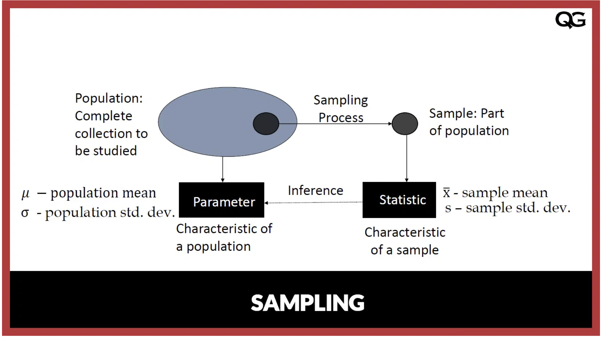

Population and Sample
Let’s revisit our initial question: Does drug X treat ailment Y in species Z?
The first step in answering this question is to define the population of interest. In this case, the population includes all members of species Z who have ailment Y.
Defining Population and Sample
Population: The entire group we want to study or draw conclusions about.
Sample: A subset of the population that is selected for study.
In most cases, studying an entire population is impractical due to its large size or inaccessibility. Instead, researchers work with a sample, a smaller group carefully chosen to represent the broader population.
What Makes a Sample Representative?
A representative sample is a subset of the population that accurately reflects its characteristics. For a sample to be considered representative, every member of the population should have a non-zero probability of being selected. Ideally, in random sampling, each member has an equal chance of selection, reducing bias.
A whole field of sampling theory explores different ways to select samples, including:
Simple Random Sampling – Every individual has an equal chance of selection.
Stratified Sampling – The population is divided into subgroups, and random samples are taken from each.
Cluster Sampling – The population is divided into clusters, and entire clusters are randomly selected.
Systematic Sampling – Every nth individual is chosen from a list.
Statistical Inference: Learning About the Population from a Sample
Since studying an entire population is often impossible, we rely on statistical inference, which is the process of drawing conclusions about a population based on data from a sample.
There are two main types of statistical inference:
Estimation – Using sample statistics (e.g., sample mean) to estimate population parameters (e.g., population mean). Examples include:
Point estimation (e.g., using the sample mean as an estimate of the population mean).
Confidence intervals, which provide a range of plausible values for the population parameter.
Hypothesis Testing – Using sample data to test assumptions about the population. For example:
Testing whether drug X significantly improves health outcomes in species Z.
Determining whether two groups have different average responses to a treatment.
Population Parameters vs. Sample Statistics
The goal of using a sample is to infer information about the population. The characteristics we study can be numerical (e.g., average age) or categorical (e.g., proportion of individuals responding to a drug).
Parameter: A fixed but often unobservable value that describes a characteristic of the entire population (e.g., the true average age of species Z worldwide).
Statistic: A value computed from the sample that estimates the corresponding population parameter (e.g., the average age in a sample of species Z).
Key Relationships
Population → Parameter (e.g., true average lifespan)
Sample → Statistic (e.g., sample mean lifespan)
A well-chosen representative sample ensures that sample statistics closely approximate population parameters. However, due to sampling variability, the sample statistic will never be exactly equal to the population parameter. Statistical inference methods, such as confidence intervals and hypothesis testing, help quantify uncertainty and determine how well our sample estimates generalize to the population.
By selecting a robust sample and applying appropriate statistical techniques, we can make valid and reliable inferences about the population. In other words, if a sample is to be used to determine facts about population, it should be a represenative sample.
As stated earlier, we often study populations but rely on samples to make inferences. This requires a clear understanding of parameters, statistics, and random variables, especially why a sample statistic is a random variable, while a population parameter is not.
Technical: Parameters vs. Statistics
Population Parameter
A parameter is a numerical value that describes some characteristic of an entire population. It is typically fixed but unknown.
- Examples of parameters:
- Population mean: $ $
- Population variance: $ ^2 $
- Population proportion: $ p $
Since a parameter describes the entire population, it does not change from sample to sample—it is a fixed value (though unknown).
Sample Statistic
A statistic is a numerical value computed from a sample. It is used to estimate the corresponding population parameter.
- Examples of statistics:
Sample mean: \(\bar{X} = \frac{1}{n} \sum X_i\)
Sample variance: $S^2 = (X_i - {X})^2 $
Sample proportion: \(\hat{p} = \frac{X}{n}\)
Since a statistic is based on a random sample, its value changes with each sample. This makes it a random variable.
What is a Random Variable?
A random variable (RV) is a numerical value whose outcome depends on a random experiment.
Types of Random Variables
- Discrete Random Variable: Takes on a countable number of values.
- Example: Number of heads in 10 coin flips.
- Continuous Random Variable: Can take on infinitely many values within a range.
- Example: The height of a randomly chosen person.
Since the outcome of a random variable is uncertain before observation, it follows a probability distribution (e.g., Binomial, Normal, etc.).
Why is a Statistic a Random Variable?
A sample statistic is a random variable because: 1. It is computed from a random sample, meaning its value varies across different samples. 2. It has a probability distribution, known as the sampling distribution. 3. It is subject to sampling variability, meaning different samples lead to different statistic values. 4. It is used to estimate fixed population parameters, but each sample produces a different estimate.
By contrast, a population parameter is not a random variable because it is a fixed, though unknown, quantity describing the entire population.
What is a Random Sample?
A random sample is a subset of a population selected in such a way that every member of the population has a known, nonzero probability of being included. The key characteristic of a random sample is that it is selected without bias, ensuring that it represents the population as accurately as possible.
Characteristics of a Random Sample
- Each member of the population has a chance of being selected
- In a simple random sample (SRS), every individual has an equal probability of being chosen.
- Other sampling methods (e.g., stratified or cluster sampling) ensure that different groups have appropriate representation.
- The selection is independent
- The inclusion of one individual does not affect the inclusion of another.
- The sample should be representative of the population
- A well-selected random sample helps ensure that inferences made about the population are valid.
Types of Random Sampling
| Sampling Method | Description | Example |
|---|---|---|
| Simple Random Sampling (SRS) | Every individual in the population has an equal chance of selection. | Drawing names from a hat. |
| Stratified Sampling | Population is divided into subgroups (strata), and a random sample is taken from each. | Selecting students from different grade levels proportionally. |
| Cluster Sampling | The population is divided into clusters, and entire clusters are randomly selected. | Choosing entire schools randomly instead of individual students. |
| Systematic Sampling | Selecting every (n)th individual from a list. | Picking every 10th person from a customer list. |
Why is Random Sampling Important?
- Minimizes bias: Ensures that sample selection is not influenced by external factors.
- Allows for generalization: Properly selected samples help make valid statistical inferences about the population.
- Forms the foundation of probability theory: Many statistical techniques assume randomness in data selection.
Note
##Comparison Table
| Concept | Definition | Random Variable? | Example |
|---|---|---|---|
| Parameter | A fixed numerical value describing a population | ❌ No | Population mean (| |
| Random Variable | A numerical outcome of a random experiment | ✅ Yes | Number of heads in coin flips |
Key Takeaways
- A parameter is a fixed (but unknown) value for a population.
- A statistic is calculated from a sample and varies with different samples.
- A statistic is a random variable because its value depends on the random selection of the sample.
- A random sample ensures fairness and reduces bias in statistical studies.
- Statistical inference uses sample statistics to estimate population parameters.
Understanding these distinctions is essential for correctly interpreting results in inferential statistics!
Illustrative Example
To solidify our understanding of parameters, statistics, random variables, and random samples, let’s consider the question:
“Does Drug X treat Ailment Y in Species Z?”
We will define these concepts using concrete values.
1. Defining the Population and Sample
- Population: All members of species Z who have ailment Y.
- Sample: A randomly selected group of 200 individuals from this population.
2. Population Parameter (Fixed but Unknown)
The true effectiveness rate of Drug X in the entire population is a parameter. - Suppose the actual proportion of individuals in the entire population who recover with Drug X is \(p = 0.75\) (i.e., 75% recover). - Since this value is for the entire population, it is fixed but typically unknown.
3. Sample Statistic (Random and Varies with Sample)
We randomly select 200 individuals from the population and administer Drug X. After a treatment period, we find that 148 individuals recovered. - The sample proportion of recovery is: \[ \hat{p} = \frac{148}{200} = 0.74 \] - This is a statistic because it is computed from the sample. - If we repeat this experiment with a different sample, we might get a different recovery rate (e.g., 0.72, 0.76, etc.), showing that the sample statistic is not fixed.
4. Random Variable Interpretation
Since the sample statistic (\(\hat{p}\)) changes with different samples, it is a random variable. - The sampling distribution of \(\hat{p}\) follows an approximate normal distribution when the sample size is large. - Its mean is approximately equal to the population proportion: \[E[\hat{p}] = p = 0.75\] - The variability of \(\hat{p}\) depends on the sample size: \[\text{Standard error} = \sqrt{ \frac{p(1 - p)}{n} } = \sqrt{ \frac{0.75(0.25)}{200} } \approx 0.03\] - This distribution allows us to make inferences about the true population proportion.
5. Random Sampling and Bias Avoidance
To ensure valid conclusions, the sample must be randomly selected: - Simple Random Sample (SRS): Each individual in the population has an equal chance of being selected. - Stratified Sampling: If species Z has multiple subgroups (e.g., age groups), we may ensure each is proportionally represented. - Cluster Sampling: If studying individuals across multiple habitats, we may randomly select some entire habitats.
6. Conclusion
In this example: - \(p = 0.75\) (Population parameter) is fixed but unknown. - \(\hat{p} = 0.74\) (Sample statistic) varies across samples, making it a random variable. - The more samples we take, the closer our estimates of \(p\) become, thanks to statistical inference.
By using random sampling, appropriate statistical methods, and understanding the nature of statistics as random variables, we can draw reliable conclusions about Drug X’s effectiveness in treating Ailment Y in Species Z.